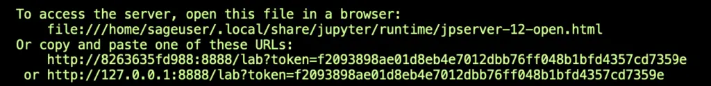

In my recent article Introducing SageMath: Symbolic Math Software in Python, I discussed some issues I had encountered with some of SageMath’s installation options, and that I got it installed and working well on a Mac using the binary downloads that are available. I also hinted that I was able to create a Docker container for it, but at the time I hadn’t yet shared that code.
In this article, I wanted to correct that by sharing what I did and going over the Dockerfile and scripts I used. I’ve shared the code in the Python Docker Examples repository, in the directory 04-docker-sagemath, but I’ll also walk you through it here. The reason behind the “04-” numbering is that this is the same repository used for the earlier article [How to Use Docker Python Image and Docker Compose With Python](http://How To Use Docker Python Images and Docker Compose With Python).
The Rationale: Using Sage With JupyterLab
When I installed SageMath on my Mac, the binary release I had worked well. Both the terminal-based shell and a Sage notebook (i.e., Jupyter Notebook with Sage kernel support) ran just fine. However, when I tried to run Sage in Jupyter Lab using sage --notebook="jupyterlab", I learned that I needed to install the Jupyter Lab kernel using sage -i, but doing that gave me the sympathetic message: “Sorry, this binary distribution does not support installing sage packages.”
“Not to worry”, I thought – “I can probably get this working under Linux using Docker.” I’m pretty spoiled about Jupyter Lab, so knowing I could run it that way was enough of an excuse to spin up a new friend for my “Python Docker Examples” project.
Creating and Building the Docker Image
I began with a public Python Docker image to be able to install Jupyter Lab easily. I was then able to install SageMath – the more challenging install – using a Linux package manager.
I wanted to run the process under a user account that shared the same account and group identifiers as my own account on the host machine. In addition to being more secure than running the container as root, another advantage was that any files I saved in Jupyterlab would have the right permissions to make them easily accessible from my host machine.
Here is the Dockerfile I used to implement this design:
# Sage Dockerfile
FROM python:3.10.4-slim-bullseye
RUN pip install --upgrade pip
RUN apt-get update
RUN apt-get install -y sagemath
RUN pip install jupyter jupyterlab
WORKDIR /sage
ARG ARG_GID
ARG ARG_UID
ENV GID=$ARG_GID
ENV UID=$ARG_UID
RUN adduser -q --uid $UID --gid $GID sageuser
USER sageuser
EXPOSE 8888
I chose a recent slim-bullseye (Debian-based) Python docker image to use as a starting point . On lines 4-5, I upgraded pip and the Linux package manager. (The SageMath package is not available by default, but upgrading the package manager solves this.)
With everything updated, on lines 6-7 we install SageMath and Jupyterlab, then we set up a known working directory for the container (/sage) on line 9 – we’ll need this when we map a volume later on.
Lines 11-16 all allow us to get the container user in sync with the host user. We start by declaring the group id and user id variables as settable command-line arguments (lines 11-12), then make those variables available in the environment on lines 13-14 The point of this is to be able to add the user and set it as the user as whom the container will run (lines 15-16) Finally – to document the port we’ll need – line 18 makes it clear that we’ll be using port 8888, which is Jupyterlab’s default port.
So the Dockerfile itself is pretty simple One thing I would recommend if you modify this is to keep the installation of the SageMath package as close to the beginning as possible because this part of the build takes the most time, and if it’s early in the Dockerfile the Docker build system will cache the layer even if other things change.
To build the image I wrote the shell script build.sh, shown here:
docker build \
--build-arg ARG_UID=$(id -u) \
--build-arg ARG_GID=$(id -g) \
-t sage:latest .
I usually set up build, run, etc. as targets in a Makefile, but given that I needed to launch some additional commands to set the build arguments correctly, a shell script was a more convenient way to accomplish this This script passes the host’s user id and group id to the container as build arguments, and tags the container with the name “sage”.
Running the Container
You may have noticed that the Dockerfile contains no “ENTRYPOINT” or “CMD” statement at the end to launch Jupyter Lab at the end This is as designed; Jupyterlab tries to launch a browser when it starts, which doesn’t work from the container That’s not a problem, but the other way to launch it then is to click on the link that shows up in the console To make sure this is visible, I chose to launch the container interactively.
Here’s the code I use to run the docker image in a container (available in the source directory as run.sh):
docker container run --rm -it \
-p 8888:8888 \
-u $(id -u ${USER}):$(id -g ${USER}) \
-v $(pwd)/sage:/sage \
sage /bin/bash
On line 1, we’re running the container interactively and removing any existing instances on start-up, on line 2 we expose the port we’ll need, line 3 is likely overkill given the container definition, but it doesn’t hurt to be explicit Line 4 is where all our work to set up the user pays off – we map the sage directory relative to the local path to the /sage directory in the container Finally, on the last line, we specify the container name and the fact that we want to work in the bash shell.
Here’s a screenshot showing how the prompt changes when we’re connected to the container:
At this point, we’re connected to the container and a final bash script and we can either run the sage shell using “sage”, or use the command ./run_lab.sh to launch Jupyterlab. This is a very simple script one-line script:
jupyter lab --ip=0.0.0.0
Note that the ip=0.0.0.0 effectively means that Jupyter Lab and sage will be accessible from any machine. We need this to make it accessible to the host. It’s not optimal from a security perspective, but it’s meant to be used as a development tool, not in a production environment.
Running this script, ./run_lab.sh, will launch Jupyter Lab and give you a link beginning with https://127.0.0.1/lab… that you can click on to connect to the Sage-enabled server:

Again, you want the last one – the other two assume you’re not running in Docker, but won’t work if you are. On a Mac, holding CMD down when hovering over it will make it clickable.
If all goes well, by this point, you should be running SageMath in Jupyter Lab:
Notice that on Linux, Jupyter Lab somehow located the SageMath kernel automatically. I expected to have to do more to get this working, but we won’t look a gift horse in the mouth. As it is, we can now run either a notebook or a console and get SageMath working just fine! If you’re working along with the GitHub repository, I put a starter SageExamples notebook you can open and play with to give you a taste.